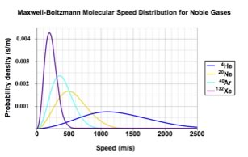

| Chapter 5.2: Temperature, kinetic energy and gases |
Now here is a (potentially) unexpected fact - the average kinetic energy of the molecules of any gas at the same temperature are equal. Let us think about how that could be true and what it implies about gases. Under most circumstances the molecules in a gas do not interact with each other significantly, all they do is collide with one another, very much like billiard balls. Given that the temperature of a gas is directly related to the average kinetic energy of the gas, it must be that when two gases are at the same temperature, their molecules have the same average kinetic energy. However, the molecules that compose the gases will be different - more than likely, the mass of the molecules of one gas is different from the mass of the molecules of the other.
|
5.1 Systems |
Since the average kinetic energies are the same, but the molecular masses are different, the average velocity of the molecules in the two gases must be different. For example: let us compare molecular hydrogen (H2) gas (molecular weight = 2 g/mole) with molecular oxygen (O2) gas (molecular weight 32 g/mole), at the same temperature. If the average kinetic energy of H2 = average kinetic energy of O2, then the H2 molecules must be moving, on average, rather faster than the O2 molecules. |
So the average speed at which an atom or molecule moves depends on its
mass. Heavier particles tend to move more slowly, on average -
it makes perfect sense. Consider a plot of the behavior of the
noble (monoatomic) gases, all at the same temperature. On average,
helium atoms move much faster than xenon atoms, which are over
30 times heavier. As a side note - gas molecules tend to move very
fast. At 0 °C the average H2 molecule is moving at about 2000
m/s, that is more than a mile per second (and the average O2 molecule
is moving at approximately 500 m/s). |
 |
| This explains why smells travel relatively fast - if someone spills perfume on one side of a room - you can smell it almost instantaneously (and note - you can’t smell something unless it is a gas - we will return to this idea later). |
Question to answer:
Questions to ponder:
|
| 28-Jun-2012 |